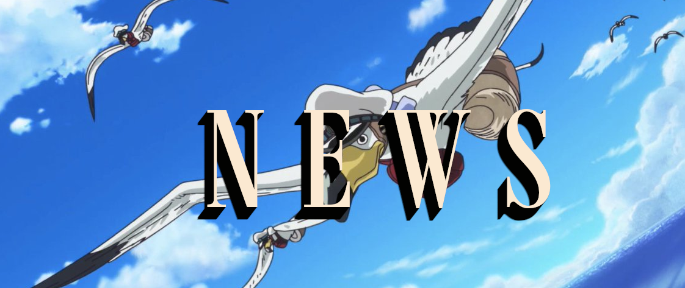
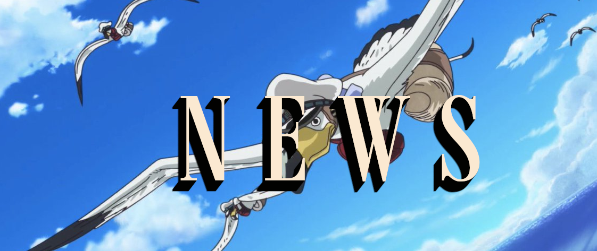

News about the universe of One Piece

One Piece Chapter 1068 (Raw Scans): The Vegapunks revolt against the World Government as Kuma and Luffy make their moves......view more
One Piece Episode 1043 Release Date & Time on Crunchyroll...view more


One Piece Film Red's Uta Takes Her New Genesis on Tour in...view more